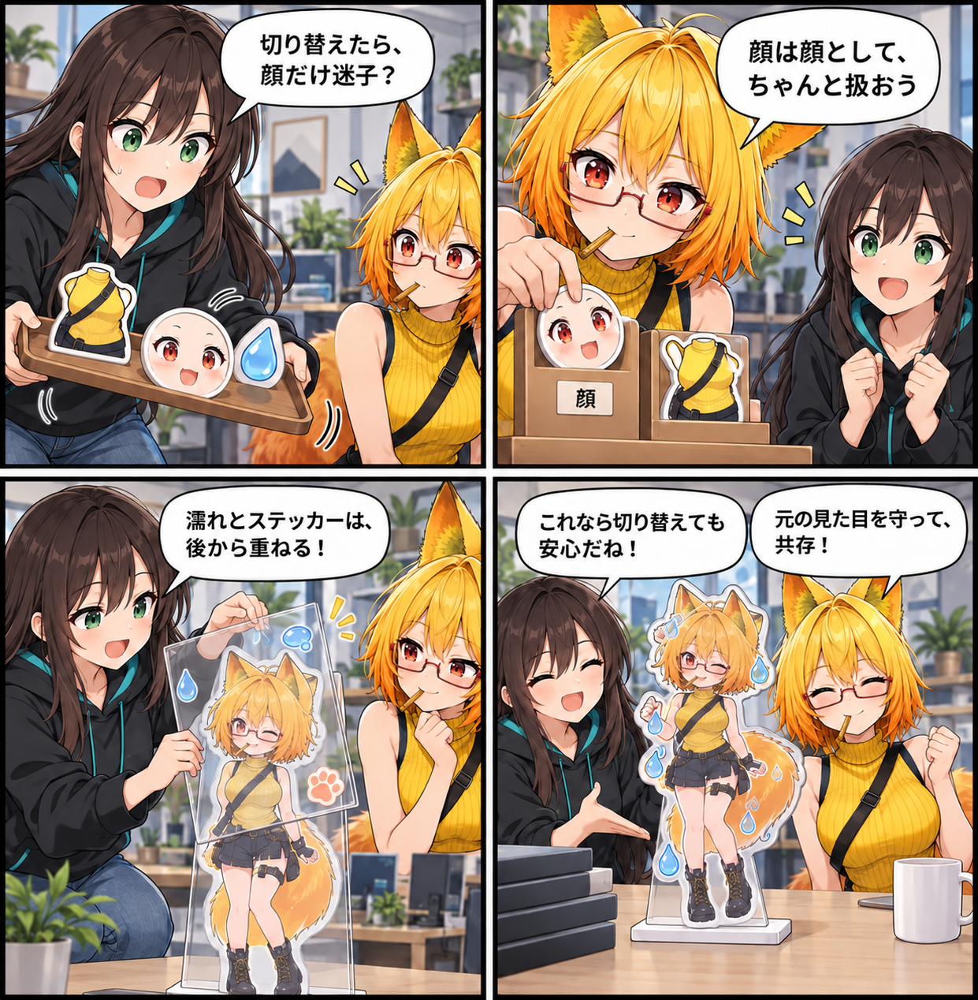

PotaToonをVRASへ、既存の描画と共存させた日
新しい描画モードを足すときほど、これまで使えていた見た目や演出を置いていきたくありません。今回は、PotaToonをVRASのRuntime描画モードとして統合し、既存のURP経路やSurface Effectと共存させる土台を整えました。

描画モードは、元のMaterialを壊さない
PotaToonは、VAB FormatやConverterへ焼き込むのではなく、Viewer Runtime側の描画モードとして扱います。切り替え時には元のMaterialを破壊せず、Runtime用のMaterialを生成します。髪・衣装・身体はGeneral、顔と白目はFace、瞳だけが独立したMaterialとして安全に判定できる場合はEyeとして扱います。
すべてを無理に変換しないことも大切です。Fur、Refraction、Gem、Overlayなど、近似で見た目を損ねやすいMaterialは元のMaterialへfallbackします。変換できることより、元の見た目を守ることを優先する方針です。
既存のURP設定を、丸ごと入れ替えない
統合ではPotaToon専用のURP Assetへ置き換えず、VRASの既存Universal Renderer Dataへ必要なRenderer Featureだけを追加します。PotaToonのCharacter/Environment Post ProcessingとCharacter Bloomは既定で無効にし、既存のBeautify 3 URP経路を保ちます。
PotaToonモードが使われていないときは、他にPotaToonCharacterが存在しない限りPotaToon用Featureを無効にします。使っていない間まで、不要なRenderer Passを毎Camera実行しないようにしています。
濡れ・ステッカーは、別レイヤーで重ねる
Surface Effectは描画Profileと分離しました。PotaToonの購入Shaderを直接変更せず、専用Overlay MaterialへFluid FlowのWetness・Sticker・Height RTを渡し、描画後に追加合成します。これにより、描画モードを切り替えてもFluid FlowのRTやバックエンドを保持したままMaterialの基準だけを切り替えられます。
ほかにも進んだこと
同じ期間には、Moeの濡れ表現と水鉄砲ステッカー、YumekaのPotaToon顔描画を修正しました。また、選択Materialの主要Propertyと全Shader Propertyを確認・編集し、Presetの保存・適用や絞り込みも行えるShader Tuning Labを追加しています。
4コマの裏話
衣装・顔・濡れのパーツを小さな舞台のレイヤーとして分け、顔だけが置いていかれないことと、Surface Effectを後から重ねることを表現しました。実際のアプリ画面やUnity実行、VR実機確認を再現したものではありません。
まとめ
PotaToonをVRASのRuntime描画モードとして迎え入れ、元Materialを守りながら既存のURP・ポストプロセス・Surface Effectと共存させる経路を整えました。描画を切り替えても、アバターの大切な顔や演出を置いていかないための一歩です。
本日のひとこと
新しい描き方にも、いつもの見た目を連れていこう。